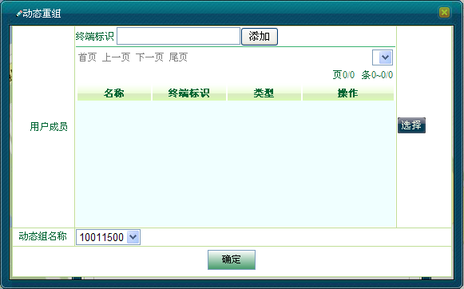
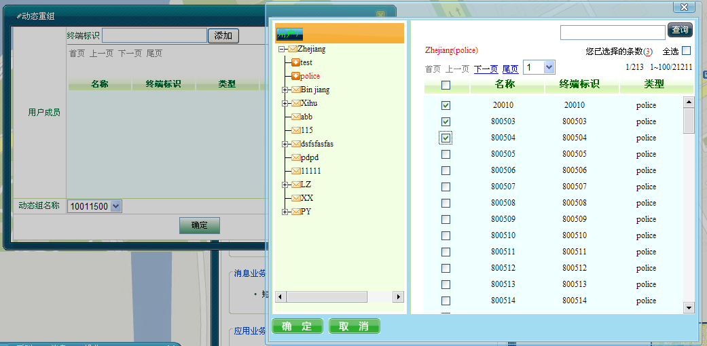
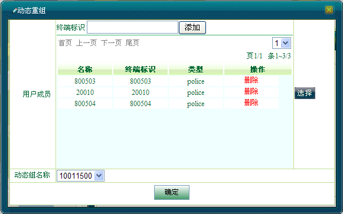
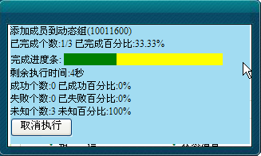
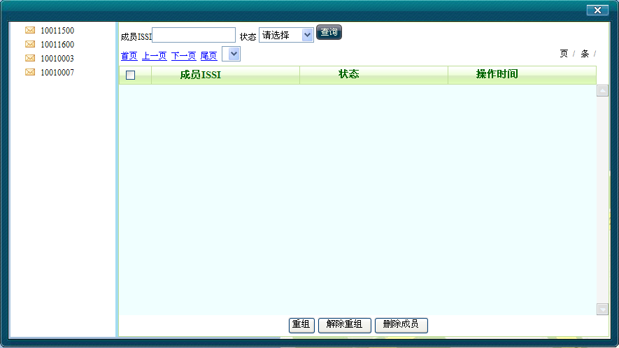
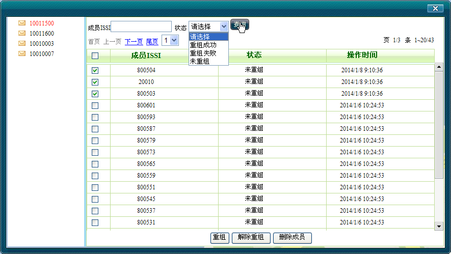
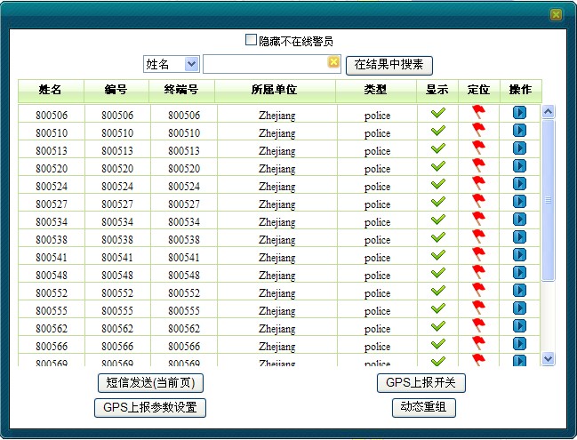

动态重组作为补充业务的一部分，相当于一个临时通话组。
在配置用户登录界面，相关配置员已创建了动态组，动态组的创建和删除，请参考配置用户动态组信息维护。而调度用户拥有往动态组里添加组成员，并进行动态重组、解重组等权限。
动态重组呼叫只能由调度台发起。
在本节中主要介绍：
给动态组里添加组成员的步骤如下：
1）在系统操作菜单栏中单击［调度功能/呼叫面板］，弹出“呼叫面板”对话框。
2）单击“呼叫业务”模块中的“动态重组”，弹出“动态重组”对话框。

图1.1 动态重组对话框
3）先在对话框里下方的”动态组名称“下拉框里选择一个动态组，然后对话框上方的”终端标识“文本框里在输入无线终端标识号，点击边上＜添加＞按扭，或者点击用户成员右边＜选择＞按扭，跳出用户列表，在列表上勾选成员。选择完成后，点击确定。如图1.2所示。

图1.2 用户选择框
4）选择完成后，系统自动获取终端标识对应的名称、终端标识和类型，列表显示。如图1.3所示。

图1.3 动态重组对话框选择用户
5）在列表上可以单击＜删除＞按钮，删除选中的用户。设置完成后，点击“确定”按扭。会跳出重组进程提示对话框，显示动态重组执行的进程和结果。如图1.4所示：

图1.4动态重组进程提示框
6）在执行过程中，还可以点击提示框的“取消执行”按扭，取消此次动态重组。
在配置用户创建了动态组，调度用户往动态组添加了组成员以后，调度用户还需要对整个动态组进行重组、解重组等操作。步骤如下：
1）在系统操作菜单栏中单击［调度功能/动态信息维护］，弹出下面对话框。

图2.1 动态组信息维护对话框
2）在对话框的左边列表选择一个动态重名，界面右边就会列表显示此动态组的所有组成员，可以在“成员SSI”里输入ISSI号进行过滤，或者点击边上＜状态＞下拉框，再点击“查询”按扭进行过滤显示。如图2.2所示。

图2.2 选择动态组成员
3）在对话框里勾选用户列表需要操作的用户，对未重组的用户再根据需要点击下方的“重组”按扭进行重组。对已经重组的用户可以点击下方的“解除重组”按扭进行操作，或者点击“删除成员”按扭直接把用户从此动态组里删除。
除了通过在呼叫面板上点击按扭进行添加动态组成员外，还可通过框选用户进行添加。
1）在地图操作工具栏中单击“”框选图标。
2）在地图上框选移动用户，该区域内被选中的所有用户（包括显示和隐藏的）都将呈现在用户列表中，如图3.1所示。

图3.1 框选用户列表
3）在上图中根据需要单击＜动态重组 ＞按钮，对列表中的用户进行设置。接下去操作步骤同添加动态组成员。
Copyright © 2012 Eastcom, Inc. All rights reserved. |
||